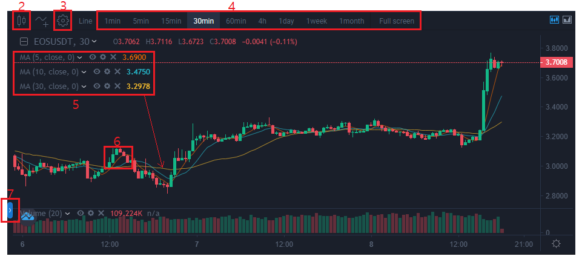
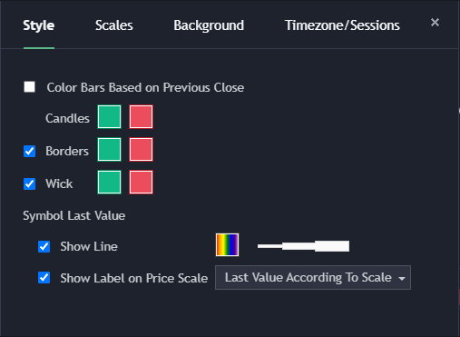
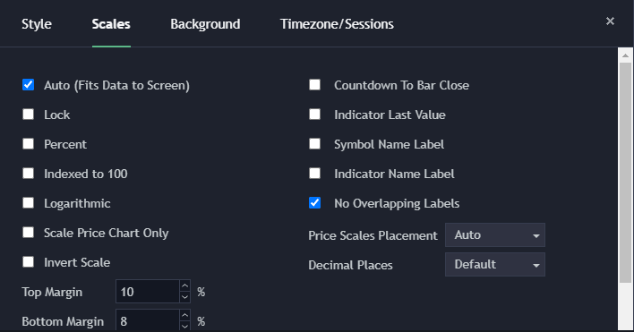
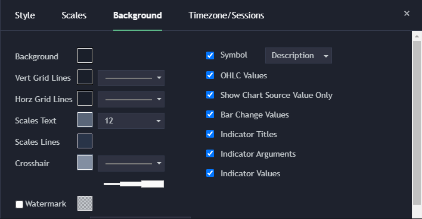
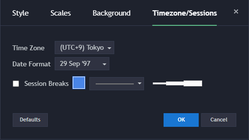
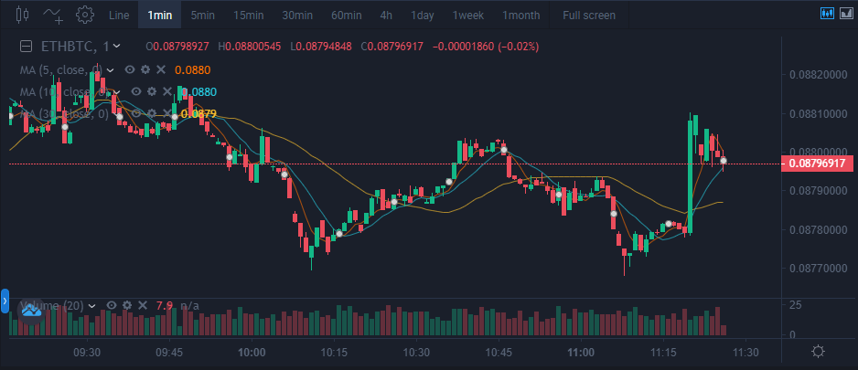
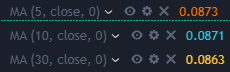
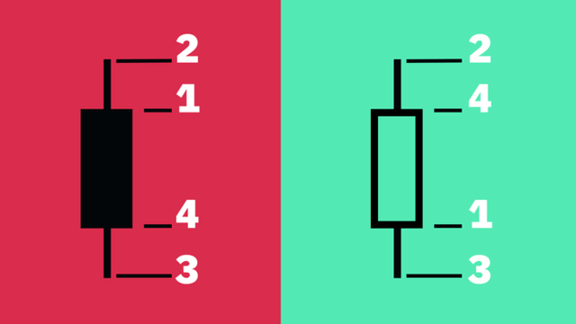
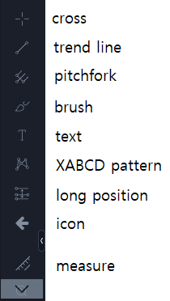

How do I look at the chart?
1. Let's find out Chart

3. Chart setting




- Through settings, you can match the chart to the style you want and change the colors.
4. Chart [1min]

- You can select and view charts that change every minute you want.
5. MA(Moving Average)

- MA is the moving average line made by collecting the closing price and connecting the average values one after another.
- For example, the 60-day line based on the 1-day time zone is the average based on 60 candles, that is, the 60-day closing price
- For example, the 20-day line is the average based on 20 candles, that is, the 20-day closing price.
- By setting, MA can make Day Change, Color Change and Hide etc., possible.
6. Candle chart

- Open : Initial transaction price of assets recorded within a specific time frame.
- High : The highest transaction price of an asset recorded within a specific time frame.
- Low : The lowest transaction price of assets recorded within a specific time frame.
- Close : The last transaction price of an asset recorded within a specific time frame.
7. Drawings Toolbar

- When you click the button, you can see the hidden Drawing Toolbar.
- Line, text, icon, etc. can be displayed on the chart using the Drawing Tool.